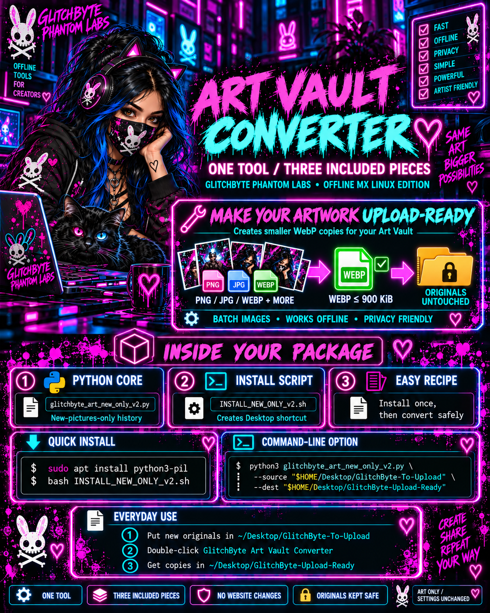

Art Vault Converter · v2
One offline image tool, three logical pieces: Python converter, Debian-based Linux desktop installer, and an accurate beginner recipe.

Source of truth: real existing GitHub v2 files
Verified against the current Art Vault converter directory. This visual showcase does not contain or install executable software. The image is an illustration; follow these copy-ready commands and the real source README, not the decorative poster text.
Do not reinstall if your v2 desktop shortcut already works. The installer would replace the desktop shortcut and save a previous one in a backup folder.
What is actually included in the v2 workflow?
glitchbyte_art_new_only_v2.py creates optimized WebP copies of new images and remembers completed ones in a separate local history file.INSTALL_NEW_ONLY_v2.sh creates the familiar local Debian-based Linux launcher.The existing GitHub source directory also preserves legacy v1 files; do not run both installers or mistake all repository files for separate products.
First-time Debian-based Linux setup
- Get the actual source folder from the official GitHub repository, via clone or Code → Download ZIP.
- Open a terminal inside the extracted
tools/glitchbyte-art-vault-converterdirectory. Do not use your Alwaysdata server. - If Pillow is missing, run the optional dependency command below.
- Only if v2 is not installed already, run the installer once.
sudo apt install python3-pil
bash INSTALL_NEW_ONLY_v2.sh
Those commands work only on a system with the required tools and when the second command is executed inside the v2 source folder containing the installer and Python script.
Art in · WebP copies out
~/Desktop/GlitchByte-To-Upload.~/Desktop/GlitchByte-Upload-Ready.The tool never posts to Facebook, never uploads your originals, and never edits your Hangout website.
Run the new-only converter directly
While inside the real v2 source directory, if you prefer terminal use instead of a desktop shortcut:
python3 glitchbyte_art_new_only_v2.py \ --source "$HOME/Desktop/GlitchByte-To-Upload" \ --dest "$HOME/Desktop/GlitchByte-Upload-Ready"
On first-time installation, v2 intentionally records images already sitting in the input folder as handled without processing them. New pictures placed there afterward are converted; originals are untouched, and previously processed pictures are not regenerated simply because you delete output copies.
History safety: History normally lives in ~/.local/state/glitchbyte-phantom-labs/art-vault-new-only-v2-history.json. Do not delete it unless you deliberately want to reset the tracking.
Your existing GlitchByte workshop
The 900 KiB target is for successfully converted static images; very difficult images or unsupported/animated formats may fail or be skipped. This HTML page is not proof of an installation. The v1.1.0 local ZIP is a separate older build; avoid mixing its installer with v2.